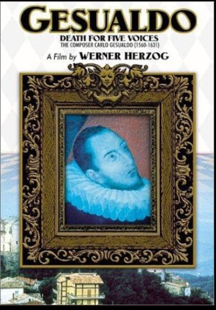

Werner Herzog
1995
60 minutes
This is another somewhat-unreliable Herzog doc that you won't remember very well. The story (which is largely invented) involves some actual madrigals attached to a spooky ghost story. The old madrigals are nice enough. Most people don't get to hear this sort of tune since it's not a style that's emphasized much for the general public in classical music performances. One of your friends on the radio station had an "early music" classical show featuring a lot of older works for voice which you would often listen to while driving home from one of your overnight shifts at work, so this is a case where the exotic becomes a bit more mundane for you.
When this film was released in 1995 you can imagine a lot of people had never heard anything quite like these madrigals. This film was released around the same time that Enigma's "Sadeness" and the Chant album recorded by the Benedictine Monks of Santo Domingo de Silos, were both popular.
Listening to this thirty years later with almost a decade of listening to Musica Antiqua under your belt displaces some of the magic that must have been felt by early viewers and listeners for this documentary.
It does however bring a smile to your face when you recall the first pieces of early music you really fell in love with. You used to have an album of dirty medieval/renaissance songs by a group called the Baltimore Consort, musicians from the music school in the Baltimore neighborhood you would later call home. It was an album full of very bawdy songs released in 1993. You played tracks from it all the time on your college radio show, which was ostensibly a punk show but you felt free to deviate pretty wildly from the format when it seemed appropriate.
One of the better songs on it had an allegedly innocent back story (much like "Les Sucettes", the song Serge Gainsbourg wrote for France Gall about a young girl licking lollipops). The song was supposedly about a maid named Mary who broke the handle of her hair broom, and she asked another servant named John to find a long stick for her that would fit it:
My man John had a thing that was long
My maid Mary had a thing that was hairy
My man John put his thing that was long
Into my maid Mary's thing that was hairy
My maid Mary then stirr'd it about
Till with stirring and stirring at length it came out
But then my man John, thrust it in once again
And knock'd it most stoutly to make it remain
But John with much knocking so widen'd the hole
That his long thing slip'd out still in spight of his soul
Till weary'd and vex'd and with knocking grown sore
Cry'd a Pox take the Hole for I'll knock it no more
Time to choose something different: